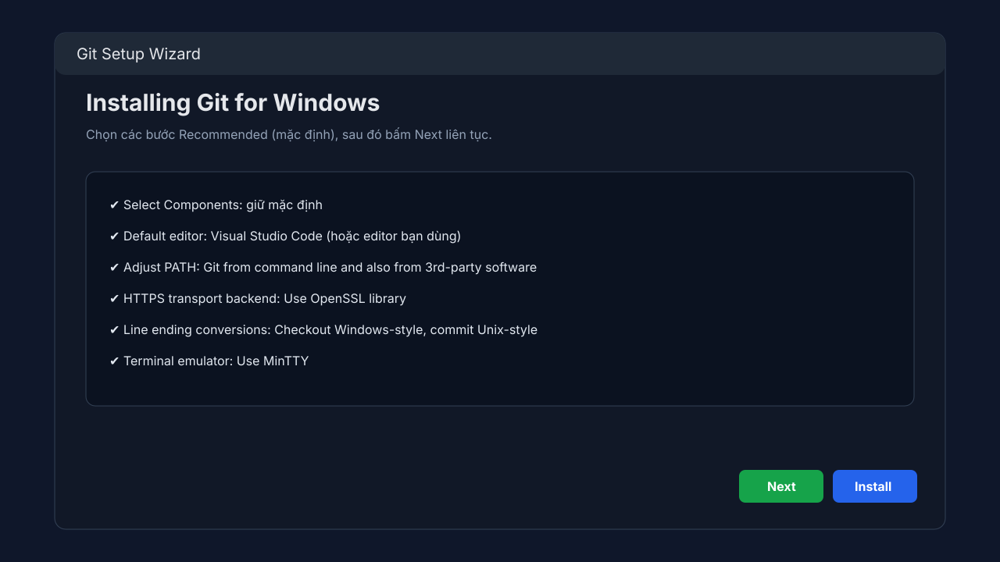
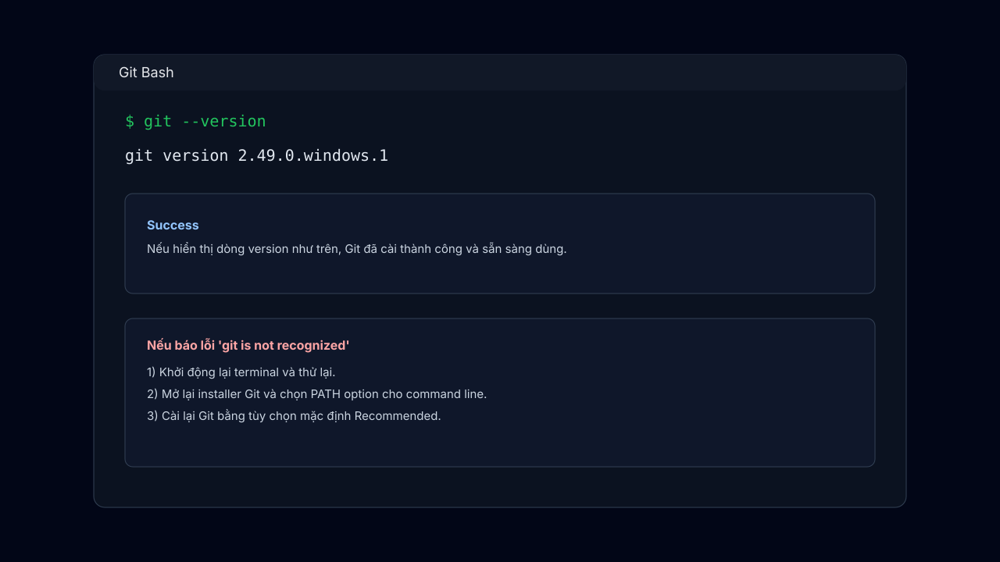
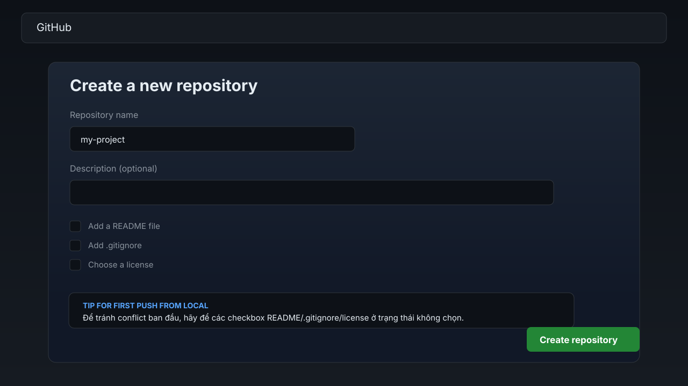
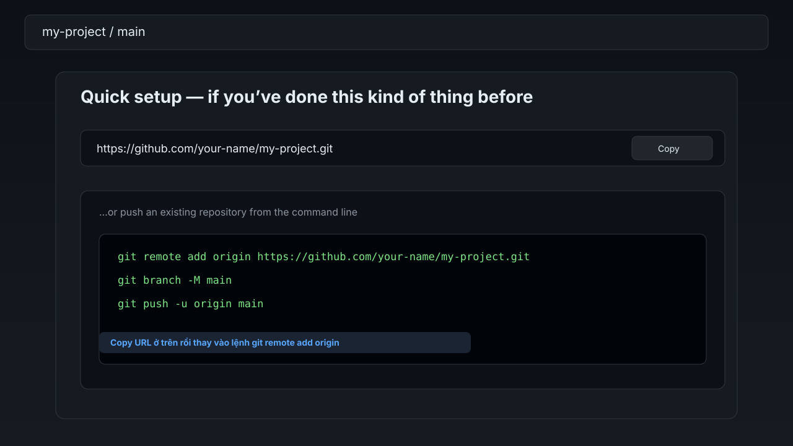
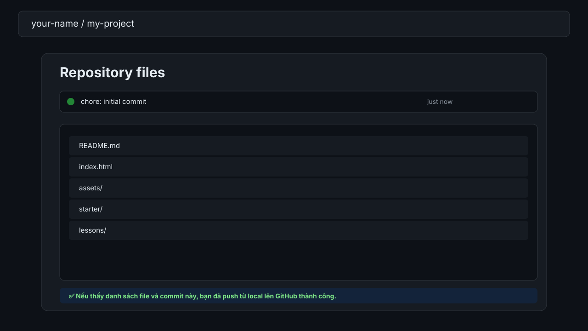

Windows
- Tải Git tại: git-scm.com/download/win
- Mở file cài đặt và để mặc định các bước Recommended.
- Mở Git Bash hoặc PowerShell, chạy:
git --version
Đây là bài bắt buộc cho người mới. Làm đúng 5 bước dưới đây để biến folder local thành repository trên GitHub.
Nếu máy bạn chưa có Git, cài theo hệ điều hành bên dưới rồi kiểm tra lại bằng git --version.
git --version
git --version
brew install git
Chọn lệnh theo distro:
sudo apt update && sudo apt install -y git
sudo dnf install -y git
sudo pacman -S git
Kiểm tra sau cài đặt: git --version
git --version.

git --version trong Git Bash.Trong terminal, chuyển tới thư mục dự án bạn muốn quản lý bằng Git.
cd /path/to/your-project
ls
Tạo repository local và lưu snapshot đầu tiên.
git init
git add .
git commit -m "chore: initial commit"
git branch -M main
Vào GitHub và chọn tạo repo mới. Không tick tạo README/.gitignore tự động.

Copy URL repository vừa tạo và gắn vào local.

git remote add origin.git remote add origin <repo-url>
git remote -v
Đẩy code lên GitHub và thiết lập upstream để các lần sau đơn giản hơn.
git push -u origin main

Nếu thấy danh sách file xuất hiện là hoàn tất 🎉
git remote remove origin rồi add lại.